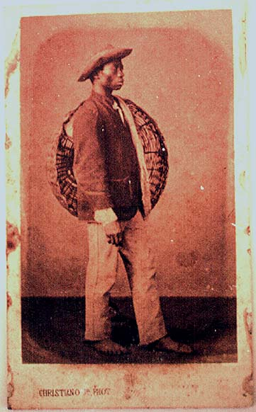

|
|  |
| Christiano
Júnior, Carte-de-visite from series Types of slaves from Rio de Janeiro
|
At the same time as these rather abstract, allegorical images of high
art, another kind of visual culture of slavery was flourishing even
before 1888. Photographs of "typical" urban slaves from Rio de Janeiro
and other cities were being offered by commercial photographers as
tokens of nostalgic memorabilia, to be cherished as a reminder of a
previous, more peaceful or safe city in an era of rapid urban growth
and modernization, or as an exotic gift to take along on the "grand
tour" to Europe. Just as the official representations, however, these
folkloristic pictures idealized slavery and removed all traces of
violence and conflict. Interestingly, however, the subjects posing for
the camera were being paid for their services, often posing in
different attire for a series of pictures. Whilst "acting as slaves",
they were in fact already subjects of capital, having to offer their
bodies up for (visual) purchase.

|